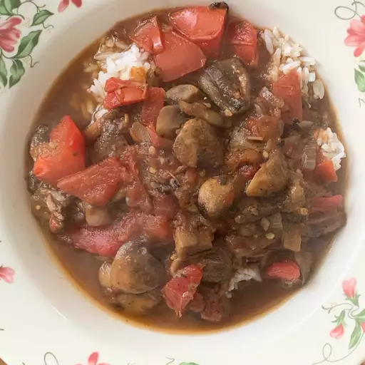

Mushroom Stew

How To Make mushroom Stew
This is a delicious, hearty, vegetarian mushroom stew recipe. I serve it with polenta, but it would be equally yummy ladled over mashed potatoes, sweet mashed potatoes, or rice. Garnish with fresh herbs.
ingredients
- ½ ounce dried mushrooms (such as porcini)
- 1 cup hot water, or as needed
- 2 tablespoons extra-virgin olive oil
- 1 yellow onion, minced
- 2 cloves garlic, minced
- 1 tablespoon fresh thyme leaves
- 1 pinch ground cloves
- 2 pounds assorted fresh mushrooms, cut into bite size pieces
- salt and ground black pepper to taste
- 1 ½ pounds tomatoes - peeled, seeded, and chopped
- 1 quart vegetable stock, or as needed
- 8 ounces instant polenta
- 4 teaspoons chopped fresh parsley, or as desired
Steps
- Place dried mushrooms in a small bowl with enough hot water to cover; let stand 20 minutes. Drain mushrooms; reserve liquid.
- Heat oil in a large pot over medium-high heat; cook and stir onion until soft, about 5 minutes. Reduce heat to medium. Stir in garlic, thyme, and cloves; cook and stir 2 minutes more. Stir fresh mushrooms and soaked dried mushrooms into onion mixture; cook and stir until mushrooms are soft, about 10 minutes. Season with salt and pepper.
- Stir tomatoes and reserved mushroom liquid into mushroom mixture; simmer over low heat until thickened, about 20 minutes.
- Bring vegetable stock to a boil; whisk in polenta. Cook polenta, whisking constantly, until polenta is thick and stock is absorbed, about 5 minutes. Divide polenta into 4 bowls; ladle mushroom stew over polenta and garnish with fresh parsley.
cook's note:
You can stir a small handful of fresh herbs into polenta after cooking if desired.